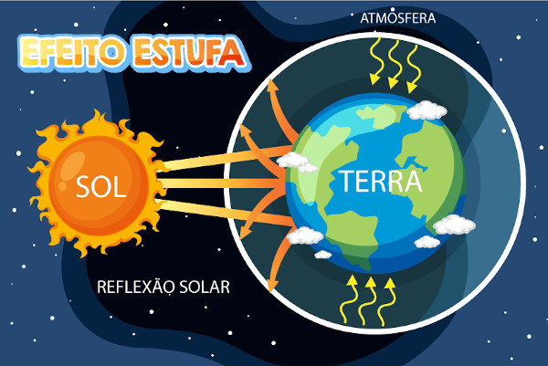

Acompanhe abaixo a obtenção em tempo real dos dados do experimento do efeito estufa. Após a finalização da coleta de dados, copie a tabela com os dados e cole em uma planilha eletrônica para fazer a análise dos dados.

| Tempo (s) | Temperatura Ambiente (°C) | Temperatura Estufa (°C) |
|---|---|---|
| 0 | 22 | 25 |
| 60 | 23 | 28 |
| 120 | 24 | 30 |
| 180 | 24 | 33 |
| 240 | 25 | 36 |
O efeito estufa é um fenômeno natural essencial para a manutenção da vida na Terra. Ele ocorre quando determinados gases presentes na atmosfera, como dióxido de carbono (CO₂), metano (CH₄) e vapor d'água, retêm parte da radiação solar refletida pela superfície terrestre, impedindo que o calor escape para o espaço. Esse processo mantém a temperatura do planeta em níveis adequados para a existência de vida.
No entanto, atividades humanas, como a queima de combustíveis fósseis e o desmatamento, têm intensificado o efeito estufa, aumentando a quantidade de gases na atmosfera. Isso resulta em um aquecimento global, com consequências graves, como derretimento de geleiras, elevação do nível do mar e mudanças climáticas extremas.
Este site foi desenvolvido com o objetivo de demonstrar o funcionamento do efeito estufa e seus impactos sobre o clima global. Através dos dados apresentados e da explicação detalhada, espera-se que os visitantes compreendam a importância de preservar o equilíbrio natural desse fenômeno. Além disso, é fundamental reconhecer o papel das ações humanas no agravamento do efeito estufa e agir de maneira consciente para reduzir as emissões de gases de efeito estufa, promovendo práticas sustentáveis e a preservação do meio ambiente.
Esperamos que o conteúdo deste site inspire atitudes mais responsáveis e que a disseminação de conhecimento sobre o efeito estufa ajude a construir um futuro mais sustentável para as próximas gerações.